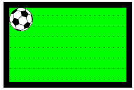
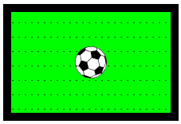

Размеры и прокрутка элементов
Задачи
Свойство elem.scrollTop содержит размер прокрученной области при отсчёте сверху. А как подсчитать размер прокрутки снизу (назовём его scrollBottom)?
Напишите соответствующее выражение для произвольного элемента elem.
P.S. Проверьте: если прокрутки нет вообще или элемент полностью прокручен – оно должно давать 0.
Решение:
elem.scrollHeight - elem.scrollTop - elem.clientHeight;
Напишите код, который возвращает ширину стандартной полосы прокрутки.
Для Windows она обычно колеблется от 12px до 20px. Если браузер не выделяет место под полосу прокрутки (так тоже бывает, она может быть прозрачной над текстом), тогда значение может быть 0px.
P.S. Ваш код должен работать в любом HTML-документе, независимо от его содержимого.
Решение:
const div = document.createElement('div');
div.style.overflowY = 'scroll';
div.style.width = '50px';
div.style.height = '50px';
document.body.append(div);
const scrollWidth = div.offsetWidth - div.clientWidth;
div.remove();
Исходный документ выглядит так:
Каковы координаты центра поля?
Вычислите их и используйте, чтобы поместить мяч в центр поля:

- Элемент должен позиционироваться за счёт JavaScript, а не CSS.
- Код должен работать с любым размером мяча (
10,20,30пикселей) и любым размером поля без привязки к исходным значениям.
P.S. Да, центрирование можно сделать при помощи чистого CSS, но задача именно на JavaScript. Далее будут другие темы и более сложные ситуации, когда JavaScript будет уже точно необходим, это – своего рода «разминка».
Решение:
ball.style.left = Math.round(field.clientWidth / 2 - ball.offsetWidth / 2) + 'px';
ball.style.top = Math.round(field.clientHeight / 2 - ball.offsetHeight / 2) + 'px';
В чём отличие между getComputedStyle(elem).width и elem.clientWidth?
Укажите хотя бы 3 отличия, лучше – больше.
Решение:
1. clientWidth отдаст число, getComputedStyle(elem).width – строку с "px" на конце.
2. getComputedStyle не всегда отдает ширину, для строчных элементов это может быть другое значение,
например, "auto".
3. clientWidth относится к внутренней области элемента, включая padding, а стандартная ширина CSS
это внутренняя область без padding.